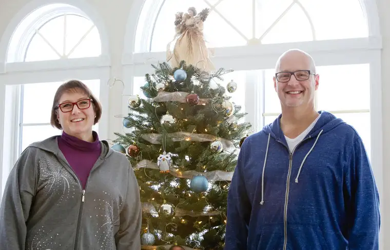

Michael Vosburg / Forum Photo Editor
“Miracles are not a contradiction of nature. They are only in contradiction of what we know of nature.” — St. Augustine
FARGO — “Lazarus is here!” The words boomed from our front porch, and I dropped the items in my hands to run outside with my husband to greet our next-door neighbor and his wife.
Patrick and Annette Schultz held the slow-cooker and brownie pan that had been filled with food just a week prior, a day we weren’t sure whether Patrick was going to return to this good earth whole.
He’d nearly died, after all, his heart having malfunctioned, yet here he was, smiling and joking in true form.
It all began early evening on Black Friday with cardiac arrest, and would culminate in an especially blessed Christmas for this couple and their college-aged kids, Maddie and Albert.
The Schultzes had gone to the YMCA on Nov. 27 to work out. Patrick, 51, a quality and patient safety director at Sanford Health and former intensive-care nurse, says he’s always gone by the motto, “A good day is a day I’ve spent with God, eaten right and exercised.”
But something went wrong that day. Annette says Patrick had been uncharacteristically crabby during the workout. “Now, I attribute it to lack of oxygen,” she adds.
“Yeah, apparently I was a real jerk,” Patrick quips.
Upon returning home, Annette headed upstairs to take a shower, and Patrick “flopped down on the couch” to rest.
Had Albert not been home on break, he wouldn’t have heard his father’s yell for help just before passing out, and Annette, on the far end of the house, likely wouldn’t have, either.
It was the last time he’d utter anything for three days.
But Annette did come, and despite her panic at finding Patrick turning blue and barely breathing, she administered CPR, thanks to training she’d received from her sister, Kirstie Bingham, a retired trauma nurse.
Paramedics arrived quickly after her 911 call, and took over from there.
“All these little things were in place to prepare us,” she says, attributing every detail of Patrick’s recovery to God’s providence.
Our family was heading north on 25th Street that night after a birthday meal out, and said a quick prayer as the ambulance charged southward with lights and sirens engaged, not knowing it held our neighbor.
We later learned that soon after reaching the closest hospital, Essentia, Patrick “arrested” a second time, and had to be revived again.
Because he’d lost oxygen, he was put into a hypothermic state, “like an induced hibernation,” Patrick explains, to prevent brain swelling and other possible physical damage.
While he “cooled off,” family and friends waited and prayed, wondering what shape Patrick would be in after the thaw.
“While we were in the critical-care waiting room, I was going through the worst-case scenarios,” Annette recalls. “What if he can’t walk? What if he’s blind?”
She thought of her high school band teacher, who, at a young age, quit her job to care for her new husband after he was in a serious car accident and paralyzed. “She’d made a vow, and that’s what came to mind: ‘He’s my husband, and we’ll make this work somehow.’ ”
But the worst-case scenarios didn’t happen. Damage to Patrick’s heart is minimal, the clot that caused the cardiac arrest has cleared, and his mind is as alert as ever.
Kirstie was in the room the day Patrick “returned” on the third day. It wasn’t until later that she told “Nettie” she’d packed funeral clothes before leaving for Fargo from her home two hours away, just in case.
As Patrick “came to,” Kirstie says, he “made a gesture that could only indicate he had all his faculties. And I said, ‘Patrick’s back! He’s back!’ and I knew we could all take a breath; that everything would be OK.”
Patrick laughs about how he knew he wasn’t dreaming when he woke up in the competitor’s hospital.
Calling his recovery “unreal,” Kirstie says, “To have a cardiac arrest on Friday and come home a week later, walking and talking without any deficit, it’s just a miracle. I can’t look at it any other way.”
That, along with witnessing friends rallying around the family to pray and care for them has revived her faith in God, she says.
The couple is still processing the experience, especially spiritually.
Patrick says he woke up in the hospital one night singing, “Fairest Lord Jesus,” which includes the verse, “That makes the woeful heart to sing.”
“That was the night (God) spoke to me,” Patrick says. “He said, ‘I gave you a new heart.’ ”
When he got home, he looked up Ezekiel 36:26: “I will give you a new heart, and put a new spirit within you. I will remove your heart of stone and replace it with a heart of flesh.”
Patrick concludes that though he’s always loved Jesus and known of Jesus’ love for him, the response of others to his near-death experience seems to be the message God wanted to reveal to him.
“The outpouring and realizing that people are speaking in ways that say they really do care, that’s been the biggest lesson so far,” he says. “I’ve realized there might have been times I thought I was lonely, but maybe that was self-imposed.”
He’s also heard Jesus say to him, “Trust me,” which he’s still trying to fully absorb and discern.
As her husband recovers, Annette has been slow to move back into the world, taking extra time off work to revel in the renewed reality of their lives together.
“It’s not that I can’t leave Patrick — I’m not afraid — but it’s more this sense that I don’t want to lose the priorities now,” she says. “It’s been fabulous to be home and be together, and you just appreciate each other’s presence, you know? ‘You’re alive!’ I don’t want to step back into the pace and the reality just yet.”
[For the sake of having a repository for my newspaper columns and articles, I reprint them here, with permission, a week after their run date. The preceding ran in The Forum newspaper on Dec. 26, 2015.]